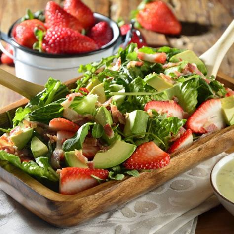

Ensalada de Aguacate y Fresas con Vinagreta Balsámica
Ingredientes:
- 4 tazas de espinacas frescas
- 1 aguacate maduro, cortado en cubos
- 1 taza de fresas frescas, rebanadas
- 1/4 taza de nueces picadas
- 2 cucharadas de queso feta desmenuzado (opcional)
- 2 cucharadas de vinagre balsámico
- 1 cucharada de aceite de oliva
- 1 cucharadita de miel o jarabe de arce
- Sal y pimienta al gusto
Instrucciones:
En un tazón grande, combina las espinacas frescas, los cubos de aguacate, las fresas rebanadas, las nueces picadas y el queso feta desmenuzado (si lo estás usando).
En un tazón pequeño, mezcla el vinagre balsámico, el aceite de oliva, la miel o jarabe de arce, la sal y la pimienta para hacer la vinagreta.
Vierte la vinagreta sobre la ensalada y mezcla suavemente para cubrir todos los ingredientes.
Sirve la ensalada de aguacate y fresas en platos individuales y disfruta de una explosión de sabores frescos y deliciosos.